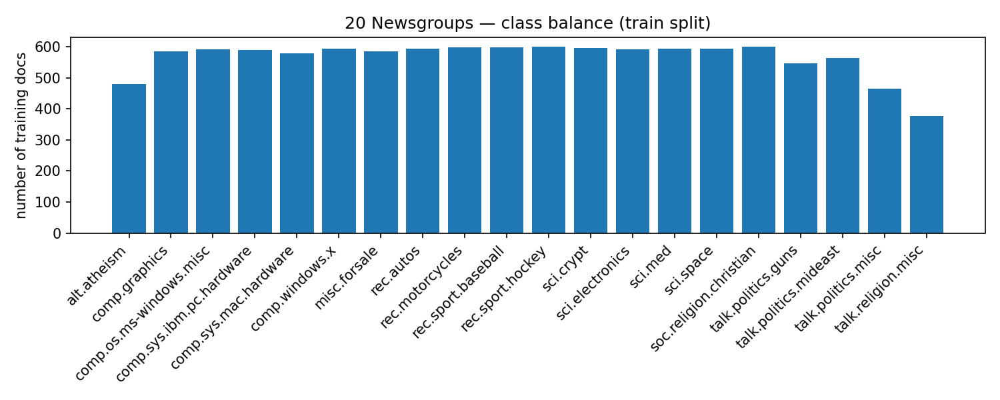
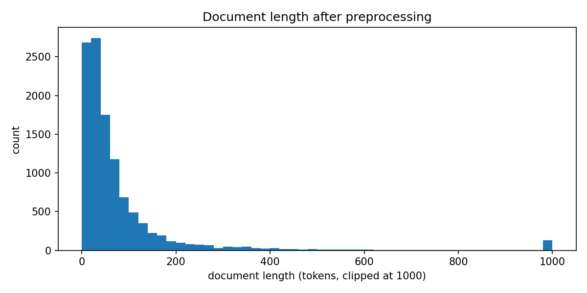
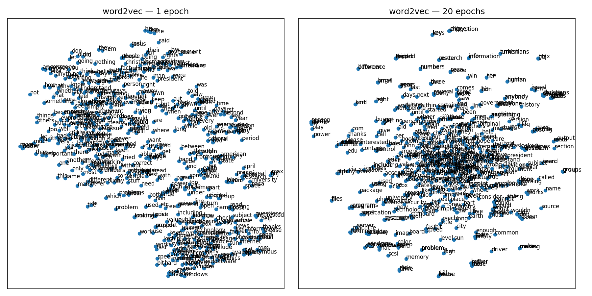
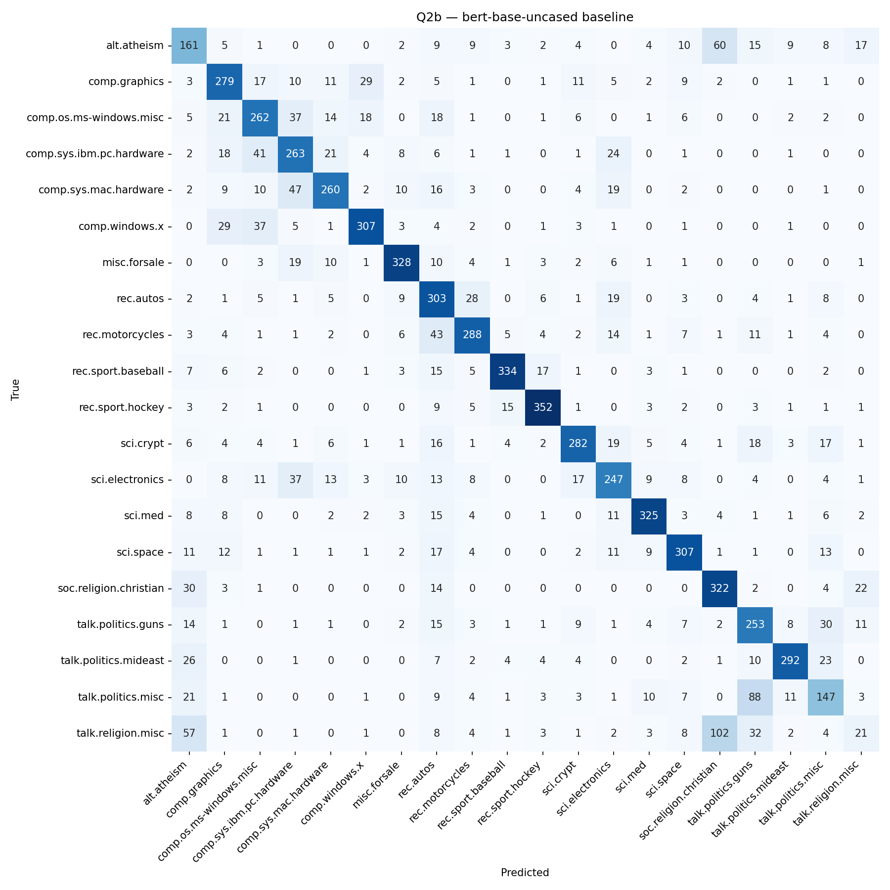
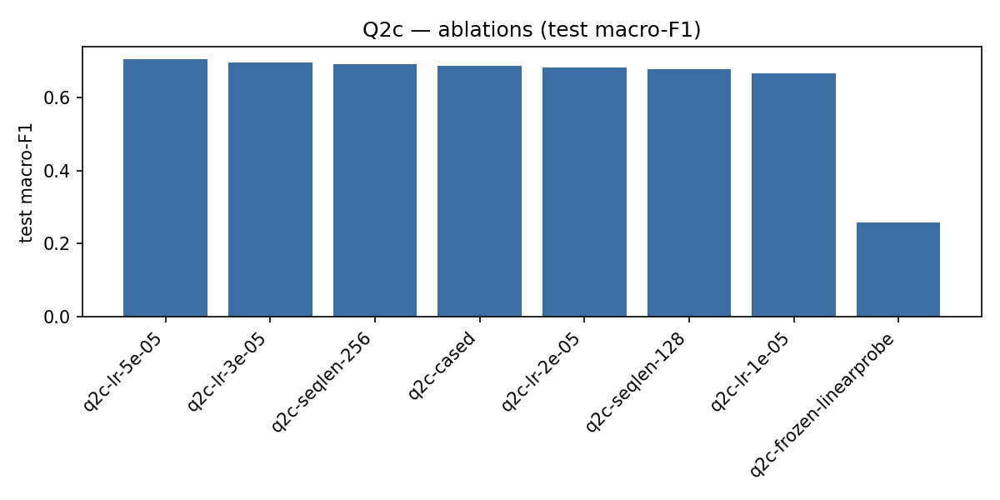
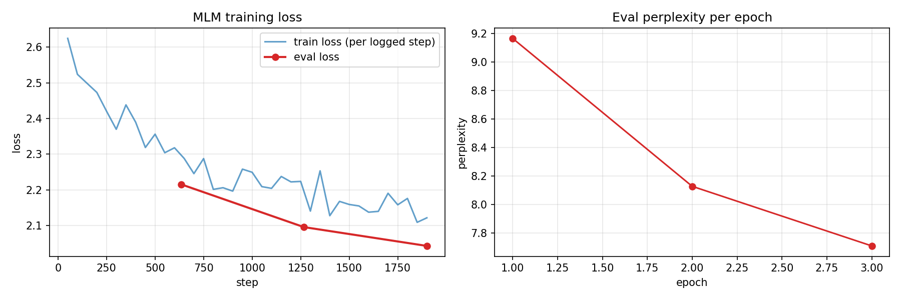
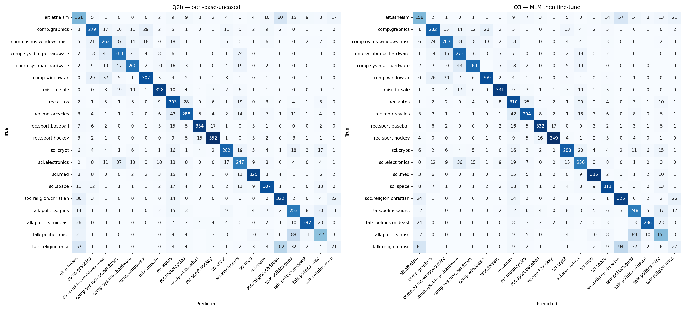
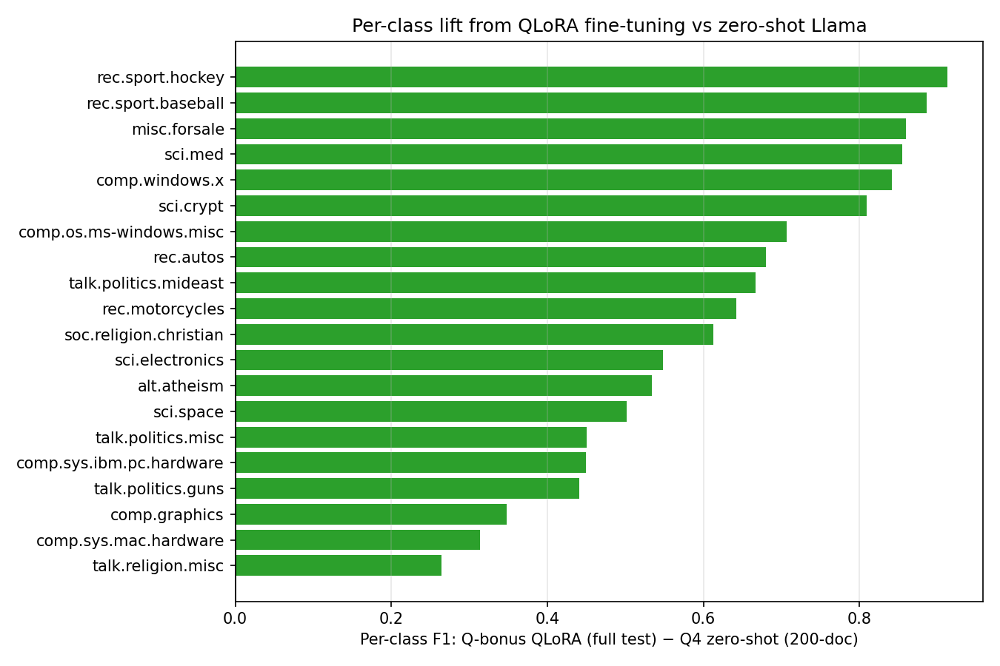

Twenty topics, four learning regimes, one question: how much representation matters.
The 20 Newsgroups corpus is a small but adversarial topic-classification benchmark — twenty classes, several of which are near-duplicates (comp.sys.ibm.pc.hardware vs comp.sys.mac.hardware; talk.religion.misc vs soc.religion.christian). We use it as a controlled testbed to measure the marginal value of each step up the representational hierarchy: from sparse term statistics, to learned dense embeddings, to deep pretrained transformers, to billion-parameter instruction-tuned LLMs.
Q1
Shallow MLP
word2vec · TF-IDF · mean+max pool
Q2
BERT fine-tune
end-to-end transformer
Q3
MLM → fine-tune
domain-adaptive pretraining
Q4
Llama-3 prompting
zero / few-shot, frozen
+
QLoRA bonus
parameter-efficient LLM tuning
18 846
documents · 20 classes · 1 student
5
methods compared end-to-end
—
best macro-F1 reached
01 · The dataset
20 Newsgroups, stripped of leakage.
sklearn.datasets.fetch_20newsgroups(remove=("headers","footers","quotes")) — without that flag the labels are trivially recoverable from message headers, so every classifier in this study sees only the body text.
The corpus is roughly class-balanced (377–600 docs per class in train), but document length is heavy-tailed: median ~40 tokens, p95 ~280, max above 6 700.
Class balance

Train-set document counts per class. Mild imbalance — talk.religion.misc and talk.politics.misc are the smallest classes and consistently the hardest to recover.
Document length distribution

Long tail informs the BERT max_length=256 choice — covers ≥95 % of documents without paying for tokens at the extreme.
Why this matters. Most published 20NG accuracy numbers leak through headers. Our stripped-text baselines start at a realistic ~63 % (word2vec) rather than the inflated 90 %+ you see in tutorial code — making the Q1→Q2→Q3 lift genuine, not spurious.
Question 1
Shallow MLP · three representations.
A single 2-layer MLP (input → 256 → 20) is held fixed across three input regimes, so any accuracy difference is attributable to the representation, not the classifier.
Accuracy & macro-F1 by representation
TF-IDF leads the Q1 group. Word2vec mean-pool is competitive; concatenating max-pool actually hurts here — the max dimension is dominated by frequent high-magnitude tokens that wash out the topical signal.
Trained vs untrained embeddings

t-SNE projection of 500 tokens after 1 epoch (left) vs 20 epochs (right). Vocab size is identical (19 306) but topic clusters only emerge with training — this is the visual evidence that the lift in Q1b's classifier comes from the embedding, not the lexicon.
Design decisions
Stopwords kept in for word2vec, removed for TF-IDF. Word2vec needs frequent function words to stabilise the co-occurrence signal inside the context window; TF-IDF is a sparse frequency representation, so stopwords there just dilute the topical evidence.
Determinism via workers=1 + seed=42. Gensim's multi-threaded training is non-deterministic; pinning to a single worker is the only way the 1-epoch vs 20-epoch comparison is meaningful.
Mean+max pooling (Q1d) as a no-architecture-change probe. The spec required improving Q1 without touching the network. Concatenating element-wise max to mean doubles the input dimension but leaves the MLP head unchanged, so we isolate representation richness from capacity.
Question 2
BERT-base fine-tune.
End-to-end fine-tune of bert-base-uncased using HuggingFace Trainer, with the same train/val indices as Q1 — so the lift is apples-to-apples, not the result of a luckier split.
Q1 best (TF-IDF)—→Q2c (best LR)——
Q2b · baseline confusion

Diagonal-heavy structure; remaining off-diagonal mass concentrates inside the comp.*, talk.politics.*, and soc.religion / talk.religion sibling clusters.
Q2c · learning-rate sweep

Best LR: 5e-05 — the canonical fine-tuning rate for BERT. Larger values destabilise the pretrained weights; smaller values under-train in three epochs.
Design decisions
Tokenisation with max_length=256. Determined from Q2a's token-length histogram at roughly the 95th percentile — covers nearly all documents without paying for compute on the long-tail outliers.
Index parity with Q1 (and downstream Q3).data.train_val_split(seed=42) is called once and reused, so when we compare to Q1 or feed into Q3 we are comparing on the same validation set.
MPS-safe Trainer flags.fp16=False · bf16=False · pin_memory=False — Apple Silicon-friendly; load-best-on-macro-F1 (not loss) so a single bad-loss-but-good-F1 checkpoint is not lost.
Question 3
MLM pretraining, then fine-tune.
Two-stage pipeline: continue masked-language-model pretraining on the 20NG train corpus, then fine-tune with Q2b's hyperparameters held verbatim. The hyperparameter constancy is the experiment — anything that changes is attributable to the MLM stage.
Stage A · MLM loss

Eval loss settles at ~2.04 → perplexity ≈ 7.71. The 90/10 split for MLM-eval is internal to the train corpus, so the downstream classification val set is never touched during this stage.
Stage B · classification confusion (Q2b vs Q3)

Patterns are visually almost indistinguishable. Domain-adaptive pretraining is real but marginal here — likely because the 20NG corpus is too small and topically too close to the generic English BERT was already trained on.
Design decisions
Independent MLM-eval split. A 90/10 carve inside the training documents — the classification validation set is held out from MLM exposure to prevent indirect leakage.
15 % masking rate, untuned. The original BERT default. The question we wanted to answer was "does DAPT help at all" — not "what is the optimal mask rate for 20NG" (that would be a separate experiment).
Stage B = Q2b hyperparameters, verbatim. Same LR, batch size, sequence length, schedule. The only variable changed is the encoder initialisation.
Question 4
Llama-3 · zero-shot and few-shot.
A frozen meta-llama/Llama-3.2-3B-Instruct in 4-bit nf4 quantisation, prompted via the chat template. No gradients; classification by generative output parsed back to a label with substring + Levenshtein fallback.
Demonstrations vs accuracy
k=0 → k=1 → k=3 demonstrations per class. Few-shot more than doubles zero-shot accuracy, but even k=3 (60 demos in context) is well below Q2 — instruction-following alone does not close the gap a fine-tune does.
Confusion matrix · k=3/class
—
Honesty note. Q4 evaluates on a stratified 200-document subset of the test set (10 per class, seed 42). At ~2–3 s per document on a consumer GPU, the full 7 532-document test set would have taken ~6 hours per run — unreasonable for three configurations under a coursework deadline. The same 200-document subset is also evaluated for Q-bonus, giving a like-for-like comparison.
Bonus
QLoRA fine-tune of Llama-3.
Same base model as Q4, now trained: LoRA adapters on the {q,k,v,o}_proj attention projections, classification head score trained in full precision via modules_to_save. A two-run sweep over rank and learning rate picks the winner by validation macro-F1.
Sweep · validation macro-F1
—
Winner · final test metrics
Evaluated twice: on the full 7 532-document test set (comparable with Q1/Q2/Q3) and on the 200-document subset (byte-identical to Q4, so the comparison with zero/few-shot is exact).
Per-class delta vs Q4 k=3

F1 lift class-by-class on the 200-document subset. Sibling classes (computer-hardware family, religion / politics families) see the largest gains — exactly where prompting struggled most.
Design decisions
LoRA on attention projections only. The standard and well-validated locus for parameter-efficient LM adaptation — rank-16 / rank-32 updates are enough to specialise attention without retraining the full 3 B parameters.
modules_to_save=['score']. The classification head is freshly initialised on top of a generative LM; if it is wrapped by LoRA it cannot move enough to learn — a silent failure mode where loss looks fine but the model never actually classifies. Saving it in full precision is the fix.
Two evaluations on the same winner. Full test → comparable with Q1/Q2/Q3. Q4 subset → comparable with zero/few-shot. One model, two reference frames.
02 · The story
Cross-question comparison.
All five methods on one axis. The categorical palette is the same one used throughout — colour identifies the question family at a glance.
Test-set performance across all experiments
Q1, Q2, Q3, and Q-bonus (full) report on the complete 7 532-doc test set; Q4 and Q-bonus (subset) report on the matched 200-doc subset. The 200-doc subset is easier on average (stratified, 10/class), which inflates Q-bonus-subset relative to its full-test score by ~5 points — the more honest direct rival to Q4 is the subset bar.
What the chart says.
Representation matters more than scale. The jump from sparse word statistics (Q1c) to a 110-million-parameter pretrained encoder (Q2) is large (~2 pts). Continued in-domain pretraining (Q3) is essentially flat — the corpus is too small for DAPT to pay off. A 3-billion-parameter frozen LLM (Q4) is worse than a fine-tuned BERT-base. Once the LLM is given the chance to actually train via QLoRA, it overtakes everything — but the gap to fine-tuned BERT is much smaller than its parameter count would suggest.
03 · Reflection
Lessons learnt.
Seven experiments. One consistent surprise: every place I expected parameter count to substitute for engineering, it didn’t — and every place I treated engineering details as bookkeeping, they decided the result.
01 · The headline
Representation, not scale, did the work.
110 million parameters of pretrained BERT outscored a frozen 3-billion-parameter Llama-3 by ~35 absolute points on the matched 200-document subset. Even with QLoRA, the 3B-parameter model only edges past BERT-base by ~4 points on the full test set. The throughline of the project: task-specific gradient flow beat both context length and parameter count — for a small, well-defined classification problem, the right inductive bias matters more than raw capacity.
Q2 · BERTQ4 · Llama promptedQ-bonus · QLoRA
02
In-domain MLM is not a free lunch.
Continued masked-language-model pretraining on the 20NG corpus lifted Q2b → Q3 by less than one point — well inside seed noise. 11 000 documents is too small and too close to generic English for DAPT to pay off. The canonical paper-claim only holds at a different order of magnitude.
Q3
03
Classification heads fail quietly.
QLoRA on {q,k,v,o}_proj with no modules_to_save on the freshly-initialised score head trains, logs sensible loss, and never actually classifies. The framework will not warn you. Framework defaults are not safe defaults for novel head wiring.
Q-bonus
04
Free wins exist if you look.
Concatenating element-wise max-pool to mean-pool doubled the input representation with zero new parameters and zero architecture change. The spec demanded improvement “without changing the network” — engineering can substitute for capacity when the bottleneck is representation, not learning.
Q1d
05
Identical splits, or nothing.
The Q1 → Q2 → Q3 lifts mean what they claim only because every stage calls data.train_val_split(seed=42) verbatim and reuses the indices. Without that contract, “Q2 beats Q1 by two points” is indistinguishable from “Q2 got luckier”.
Q1Q2Q3
06
Disclosure beats laundering.
The Q4 200-doc subset is easier on average than the full test set — visible in the ~5-point gap between Q-bonus full and Q-bonus subset evaluations of the same adapter. Stating the limitation up front protects the comparison; hiding it would have quietly inflated every Q4 number by ~5 points.
Q4Q-bonus
04 · Next steps
Future work.
Full-test Llama evaluation
Run the Q4 prompts and the Q-bonus winner over the complete 7 532-doc test set. With batched generation and KV-cache reuse this is tractable on an A100, and it would remove the lingering uncertainty about the 200-doc subset being easier than the full distribution.
Larger MLM corpus for Q3
The DAPT signal flatlined likely because 11 k documents is too small. A natural extension is concatenating 20NG with an external news / forum corpus before the MLM stage — does the lift appear once the LM has actually seen new vocabulary?
Instruction-tuned Llama-3.1-8B
The 3 B model already comes within ~5 points of fine-tuned BERT once QLoRA'd. The 8 B variant on the same training budget should close that gap further — a useful data point on the parameter-vs-fine-tune trade-off.
Error analysis on sibling classes
Every method's residual error concentrates in the same three clusters (comp.* family, talk.politics.*, religion). A focused study — examples, attention probes, prompt re-engineering — would clarify whether the failure is in the representation or in the labels themselves (some labels arguably overlap by construction).